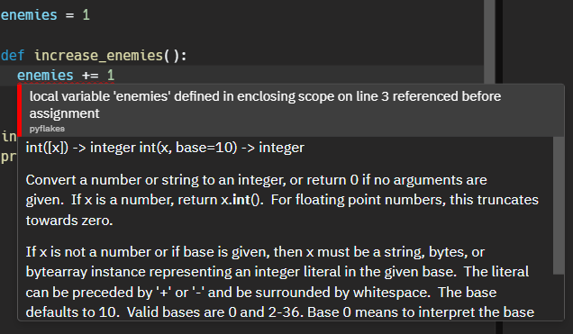

Scope of a variable is used to check the accessability of that variable in a program. Is indicates, from where in a particular program the variable can be accessed.
Example
enemies = 1
def increase_enemies():
enemies = 2
print(f"Enemies inside the function is {enemies}")
increase_enemies()
print(f"Enemies outside the function is {enemies}")
Output
------
2 #Because this is printing the variable inside the function. And inside the function,
#variable is updated, so its value becomes 2
1 #Because the value of enemies outside the function is 1
Local variable and Global variable
💡
Variables in a program can be divided into two based on their scopes - Local variable and Global variable
Local variable -
a variable that is defined inside the function, that is local to that function
We cannot access a local variable from outside the function, because the scope of that variable is within that function alone
If we need to access the variable outside the function, we need a global variable
Global variable
A global variable can be accessed from anywhere within the program, within and outside a function
The concept of local and global is applicable to variables, functions, objects, etc.
Block scope
💡
Block means the part of code which is contained between loops or if statements. Block scope of a variable indicates the scope of variable within the block.
Python does not have a block scope.
if a>3:
small_number = 3
else:
small_number = a
print(small_number)
'''
In this case, even though the variable small_number is defined inside if, and is
intended, the variable is not local and is available from anywhere within the program
'''
Modify a global variable locally
We cannot directly modify or use a global variable inside a function
This throws an error. Even though we have defined the variable outside the function, if we need to use it or modify it locally, we need to explicitly give that variable or mention the already defined one as a global variable. Line number 3
Why can't we modify a global variable directly?
This is used to prevent unnecessary bugs and failures caused if we could easily change any global variable
We can use it directly, but we can't modify it
Another way to modify the global variable is by making use of a return statement.
Global variables are widely used when we need to define constants, which we never change in the programming
For example, if we need to define max_len or batch_size, we can define it as global and can use it whenever we need. But we cannot modify that global variable directly. We can change its value by assignment, inside any function.
A good practice to define constants is to use upper case
BATCH_SIZE = 8
MAX_LEN = 128
Assignment
The number-guessing game
Guess the random number selected by the computer correctly within the given number of chances
import random
EASY_LEVEL_TURNS = 10
HARD_LEVEL_TURNS = 5
def set_difficulty():
difficulty_level = input("Choose a difficulty level. Easy or Hard ").lower()
if difficulty_level == "easy":
number_of_attempts = EASY_LEVEL_TURNS
else:
number_of_attempts = HARD_LEVEL_TURNS
return number_of_attempts
def compare(user_input,answer):
if user_input<answer:
print("Too low")
return False
elif user_input>answer:
print("Too high")
return False
else:
print("You win!")
return True
answer = random.randint(1,101)
print(answer)
number_of_attempts = set_difficulty()
end = False
while number_of_attempts>0 and end == False:
user_guess = int(input("Make a guess: "))
end = compare(user_guess,answer)
number_of_attempts -= 1
if number_of_attempts==0 and end == False:
print("You lose!")

{kind=link}